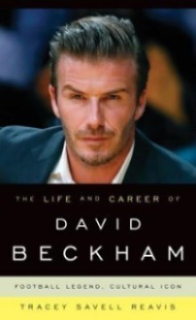
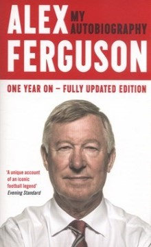
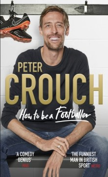
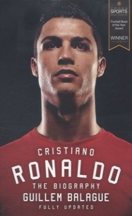
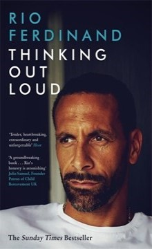

Steven Gerrard is a hero to millions, not only as the inspirational captain of Liverpool FC, but as a key member of the England team. Here, for the first time, he tells the story of his lifelong obsession with football, in an honest
and revealing book which captures the extraordinary camaraderie, the soul-destroying tensions and the high-octane thrills of the modern game as never before. Born in the Liverpool suburb of Huyton in 1980, Steven first joined
Liverpool as a YTS trainee and played his first game for thefirst team aged just 18. His career has gone from strength to strength ever since and he is now the team's captain and its lynchpin.
Liverpool's incredible comeback in the Champions' League final in Istanbul in May 2005, recovering from a 3-goal deficit against AC Milan to win on penalties, is testament to the amazing power Gerrard has over his team. His presence on the pitch is a
force to be reckoned with and places him amongst the very first rank of players in the world. A relatively private figure, Steven has rarely spoken out in public. Now, his legions of fans will be allowed an intimate glimpse
of what makes their hero tick. He speaks for the first time about the torturous will-he-won't-he Chelsea rumours and his undying passion for Liverpool. We experience first-hand the highs of winning in Istanbul and elsewhere,
as well as the occasional lows of being parted from his much-loved family and friends. And of course, the book contains a full blow-by-blow account of England's world cup campaign in Germany 2006. Steven Gerrard's book
is the definitive football autobiography. Like its subject, it's honest, passionate and exhilarating. If Steven Gerrard isn't your hero yet, by the time you've read this he will be...

DAVID BECKHAM: THE LIFE AND CAREER
By Tracey Reavis | 07/08/14 €14.20In Stock
Quantity
Synopsis
David Beckham is an English soccer player whose popularity extends beyond the field and into international celebrity. He has played for some of the best clubs in the world, including Manchester United, Real Madrid, and AC Milan,
and is known worldwide for his free kick expertise and spectacular long-range shots. His singular dedication to becoming a renowned soccer player has been an inspiration to teammates and fans alike. In The Life and Career of
David Beckham: Football Legend, Cultural Icon, Tracey Savell Reavis delivers an up-to-date and refreshing look at one of soccer's most-recognized athletes. Drawing on extensive research and in-depth interviews, Reavis brings
an outside perspective to Beckham's life in order to reveal his
profound impact on the sport in the United States and worldwide. From his birth in Leytonstone, London and his celebrated playing career to his role in bringing the 2012 Olympic Games to London and his retirement from soccer in 2013, Reavis examines the
influences that shaped Beckham into the legend he is today. Featuring photographs and original interviews, this book illuminates Beckham's status as a soccer star, husband, father, fashion icon, and cultural phenomenon.
The first biography since his retirement, The Life and Career of David Beckham will not only appeal to soccer fans, but also to anyone who wants to know more about this international icon.

ALEX FERGUSON
By Alex Ferguson | 23/10/14 €13.00In Stock
Quantity
Synopsis
Sir Alex Ferguson's compelling story is always honest and revealing he reflects on his managerial career that embraced unprecedented European success for Aberdeen and 26 triumphant seasons with Manchester United. Sir Alex Ferguson's
best-selling autobiography has now been updated to offer reflections on events at Manchester United since his retirement as well as his teachings at the Harvard Business School, a night at the Oscars and a boat tour round the
Hebrides, where he passed unrecognised. The extra material adds fresh insights and detail on his final years as United's manager. Both the psychology of management and the detail
of football strategy at the top level can be complex matters but no-one has explained them in a more interesting and accessible way for the general reader than Sir Alex does here. MY AUTOBIOGRAPHY is revealing, endlessly entertaining and above all inspirational.

PETER CROUCH: HOW TO BE A FOOTBALLER
By Peter Crouch | 06/09/18 €17.99In Stock
Quantity
Synopsis
You become a footballer because you love football. And then you are a footballer, and you're suddenly in the strangest, most baffling world of all. A world where one team-mate comes to training in a bright red suit with matching
top-hat, cane and glasses, without any actual glass in them, and another has so many sports cars they forget they have left a Porsche at the train station. Even when their surname is incorporated in the registration plate.
So walk with me into the dressing-room, to find out which players refuse to touch a football before a game, to discover why a load of millionaires never have any shower-gel, and to hear what Cristiano Ronaldo says when he looks
at himself in the mirror. We will go into post-match interviews, make fools of
ourselves on social media and try to ensure that we never again pay £250 for a haircut that should have cost a tenner. We'll be coached and cajoled by Harry Redknapp, upset Rafa Benitez and be soothed by the sound of an accordion played by Sven-Goran
Eriksson's assistant Tord Grip. There will be some very bad music and some very bad decisions. I am Peter Crouch. This is How To Be A Footballer. Shall we?

CRISTIANO RONALDO
By Guillem Balague | 23/10/14 €14.50In Stock
Quantity
Synopsis
The definitive biography of Cristiano Ronaldo, named Football Book of the Year at the Cross Sports Book Awards 2016 Fully updated to include the 2015-16 season Cristiano Ronaldo is one of the greatest footballers of all time, a
dream he pursued from the age of just twelve when he left his humble origins on Madeira behind. It wasn't long before he had the biggest clubs in Europe knocking on his door, but it was Manchester United who won the race for
his signature. Under the tutelage of Sir Alex Ferguson, Ronaldo developed into the complete footballer and athlete, winning three league titles and a Champions League along the way. He then
became the biggest galáctico of them all when he transferred to Real Madrid for a record-breaking fee. However, he has endured a difficult relationship with managers, teammates and the fans - and his time at the club has often been overshadowed by his
fierce rivalry with Barcelona and Lionel Messi. Guillem Balagué, respected football journalist and expert on the Spanish game, provides the definitive account of what has made Ronaldo the player and man that he is today.

RIO FERDINAND: THINKING OUT LOUD
By Rio Ferdinand | 20/09/18 €11.20In Stock
Quantity
Synopsis
'When Rebecca died, the idea that one day I might begin to feel better would have struck me as laughable ... I know how persuasive this kind of permanence thinking can be. I know too that anyone locked in its grip will laugh if
I promise them that their pain will one day ease. It will. Of course it will. But I know better than to expect anyone to believe me.' In 2015, former England football star Rio Ferdinand suddenly and tragically lost his wife
and soulmate Rebecca, aged 34, to cancer. It was a profound shock and Rio found himself struggling to cope not just with the pain of his grief, but also with his new role as both mum and dad to their three young children. Rio's
BBC1 documentary, Being Mum and Dad , touched everyone who watched it
and won huge praise for the honesty and bravery he showed in talking about his emotions and experiences. His book now shares the story of meeting, marrying and losing Rebecca, his own and the family's grief - as well as the advice and support that get
him through each day as they strive to piece themselves back together. Thinking Out Loud is written in the hope that he can inspire others struggling with loss and grief to find the help they need through this most difficult
of times.